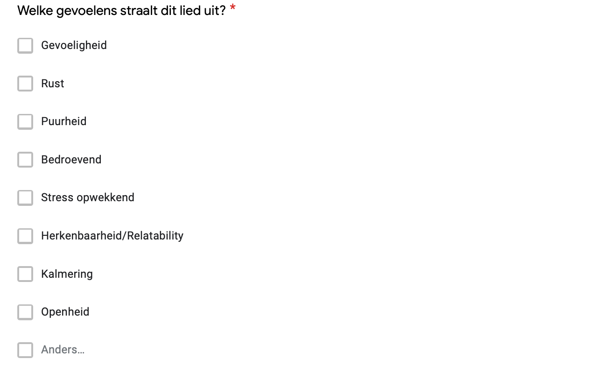
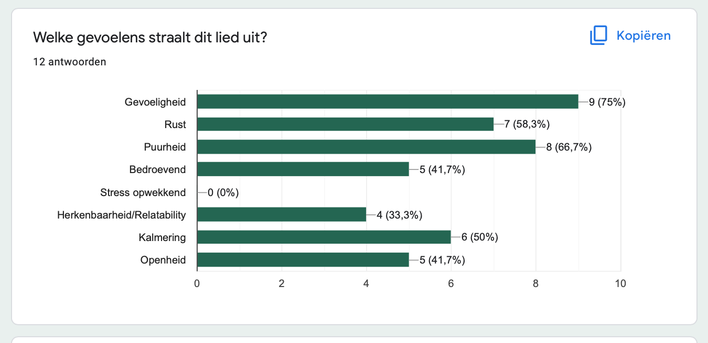
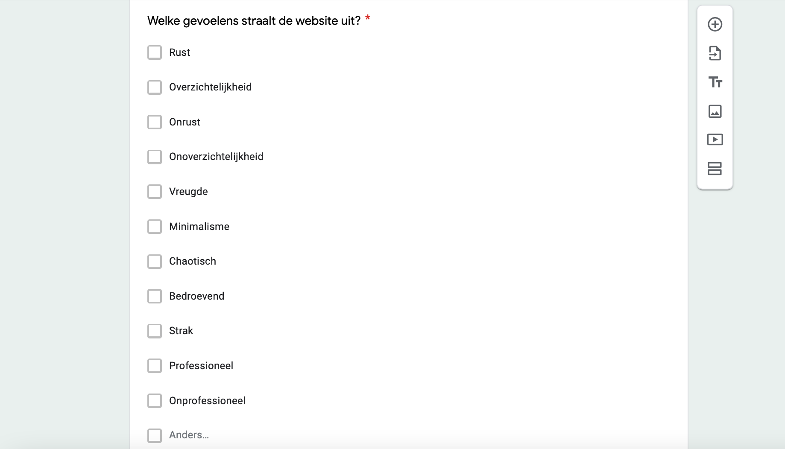
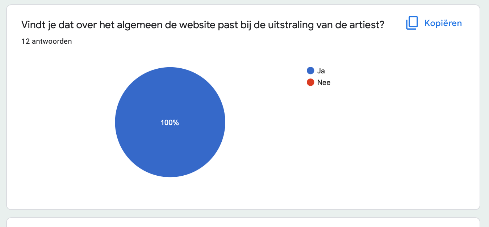

user tests | ar-jane website
Aanpak
Na Ar-Jane's website helemaal gebouwd te hebben, besloot ik om een User Test uit te voeren om te kijken of onze website qua design goed samengaat met de sfeer van Ar-Jane's muziek. Hiervoor heb ik een Google Forms enquête opgesteld met een aantal vragen over de sfeer die de website geeft om te kijken of het ook afstemt op de muziek. Dit is het proces daarvan.
Het proces
Voordat ik vragen opstelde, zette ik eerst een mogelijkheid om naar 1 van Ar-Jane's liedjes te luisteren. Na dat gedaan te hebben kwamen de vragen. Dit was de eerste meerkeuzevraag:
Daaruit bleek dat het liedje vooral veel gevoeligheid, puurheid en rust uitstraalde.
Hiermee konden we een goede basis leggen voor de sfeer die Ar-Jane uitstraalt, waarmee de website moet samenhangen. Na dit gevraagd te hebben ging ik over naar het laten bekijken van de website. Ik vroeg aan de gebruikers om de tijd te nemen om even rond te kijken op de website en een goed beeld ervan te krijgen. Vervolgens kwam ik met een meerkeuzevraag die ging als volgt:
Met de resultaten hieronder kon ik concluderen dat de website redelijk goed aansloot op de algemene sfeer van Ar-Jane, vooral op het gebied van rust. Om een nog preciezere antwoord te krijgen volgde nog een vraag, deze keer een Ja/Nee vraag:
100% van de gebruikers waren het ermee eens dat de website goed past bij de uitstraling van Ar-Jane.
Conclusie
Als conclusie van deze User Test kan ik zeker zeggen dat we als groep een goede website hebben gebouwd die goed past bij de uitstraling van Ar-Jane en haar muziek. Hij voelt rustgevend en natuurlijk aan, zoals de muziek ook aanvoelt en uit deze User Test blijkt ook dat dat voor de gebruiker ook het geval is. Zeker tevreden met dit resultaat.
© 2022 Yassin Chehlaoui